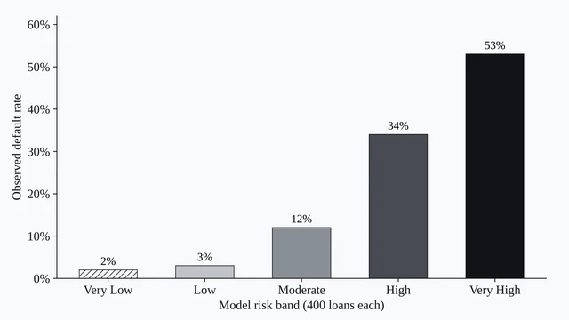
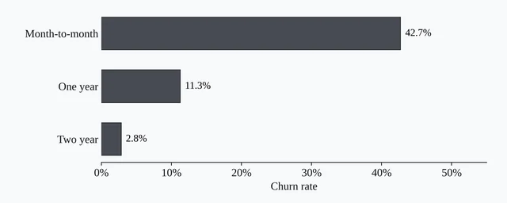

Data Analyst & Economist · Analytics, dashboards, and econometric research
Permanent emigrants, 1981 to 2023

Default rate by risk band

Churn rate by contract type
Portfolio · Data analyst and economist
The analyst who thinks like an economist.
I’m Lian Cataytay. Twelve projects in business intelligence, machine learning and econometric research, each argued with real data and real figures.
Lead study · CARP and agricultural productivity
1970
Output per worker (thousand 2015 USD), the Philippines (solid) and its synthetic control (dashed). After the 1988 reform the Philippines averages 18.2% lower. Read the study →
Welcome
Hello, hola, bonjour, olá & kumusta!
I’m a data analyst who thinks like an economist. I care about how numbers work just as much as what decisions they support.
Data is only valuable when it leads to better decisions. Many organizations already have the numbers; what they lack is a clear way to interpret them. That is the gap he focuses on closing.
Yearly labor productivity gap between the Philippines and its synthetic control. Grey bars are the pre-treatment fit; black bars are post-1988 gaps (average 18.2%). Source: Cataytay, Deluna and Evangelio, synthetic control analysis.